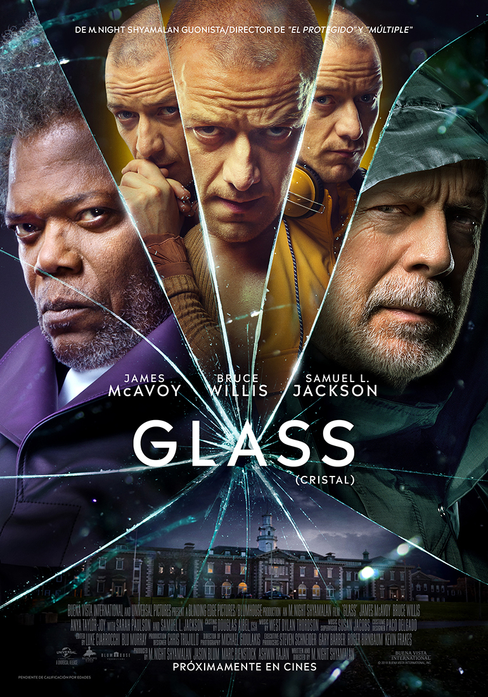
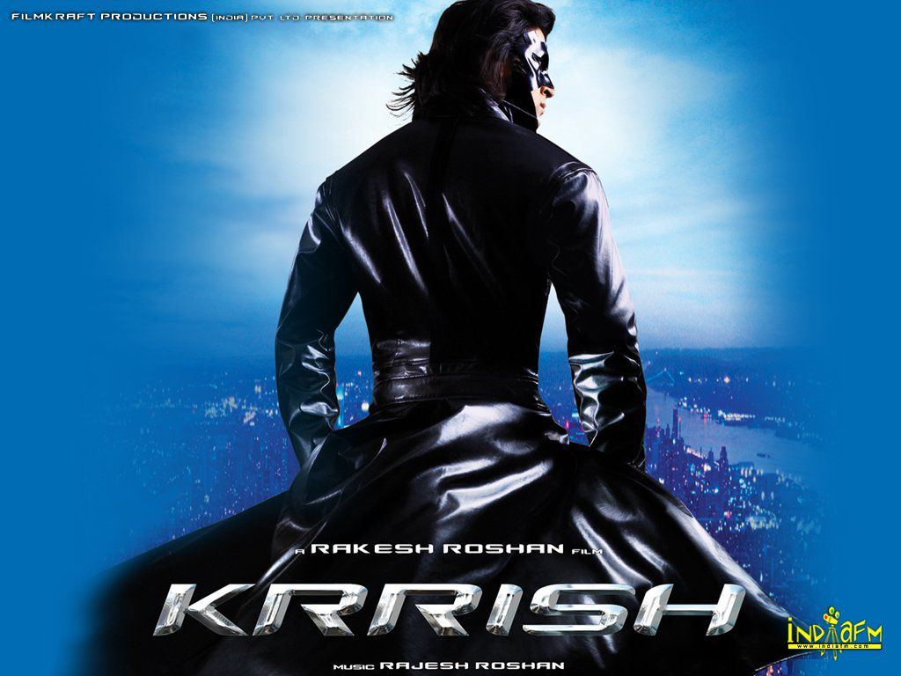
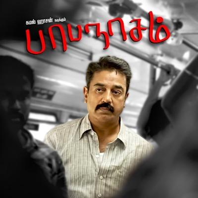

Thriller Movies
-

Glass
David Dunn / the Overseer and his son Joseph track down the Horde to an abandoned factory where he has four cheerleaders hostage to feed to the Beast, a superhuman personality the Horde all worship. Dunn rescues the cheerleaders and has a brief confrontation with the Beast until they are captured by Dr. Ellie Staple. Staple is part of an unknown clandestine organization that specializes in convincing those who believe are superhuman that they are delusional. They are taken to Raven Hill Memorial where a sedated Elijah Price / Mr. Glass, whom Dunn previously fought over a decade ago, is being held.
See more -

Hey Ram
The movie begins in 1999, with Saket Ram, an 89-year-old Hindu man, on his death bed in Madras. He is being taken care of by his grandson (also named Saket Ram) who is a famous novelist who writes historical fiction, and their family doctor, Munawar. The younger Ram explains how he grew up listening to his grandfather's stories and proceeds to narrate one of his grandfather's strange stories that he plans to use for his next novel. As his grandson narrates the story, the dying Saket Ram relives it.
See more -

Get Out
Chris Washington is a black photographer from Brooklyn, New York, preparing for a weekend visit to Upstate New York, to meet the family of his white girlfriend, Rose Armitage. Hesitant, he asks Rose if her family knows about their interracial relationship, but she assures him that they are not racist. While there, Rose's brother Jeremy and their parents, neurosurgeon Dean and hypnotherapist Missy, make disconcerting comments about black people, and Chris witnesses strange behavior from the estate's black housekeeper Georgina and groundskeeper Walter.
See more -

Krish
Five-year-old Krishna Mehra is the son of scientist Rohit and his late wife Nisha. He lives in the small town of Kasauli. He undergoes an intelligence quotient (IQ) test by his school principal, who suspects that Krishna has superpowers like his father. His grandmother Sonia takes young Krishna to a remote mountain village to conceal his unique abilities. Years later, an adult Krishna meets vacationing friends Priya Kalyanan and Honey Arora, who live in Singapore. Krishna falls in love with Priya.
See more -

Papanasam
Suyambulingam is an orphan who had dropped out of school after his 5th grade. In 2014, he is a businessman running a cable TV service in Papanasam, a small town in the Tirunelveli district of Tamil Nadu. He owns two buildings in the main part of the village, and a well built house in a garden of area 5 acres. He is married to Rani and they have two daughters, 16 year old Selvi and 10 year old Meena. His only interest apart from his family is watching films. He spends most of his night time in front of the TV in his small office.
See more